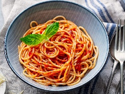
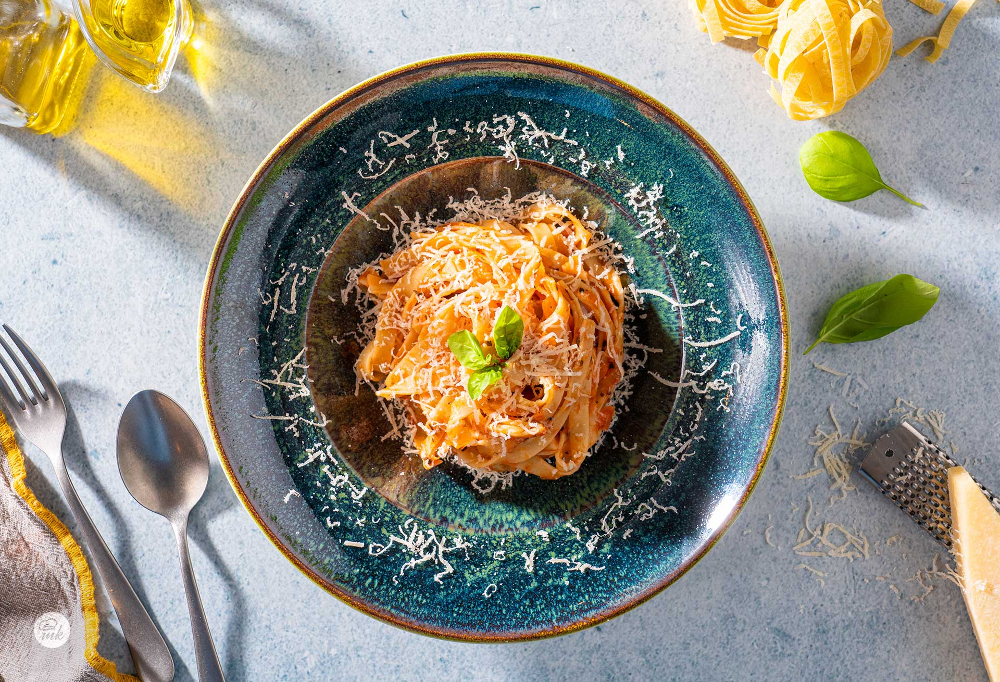

Spaghetti Napoli mit Tomaten, Knoblauch, Zwiebeln,
Basilikum und Parmesan

Für 4 Portionen:
- 300 g Spaghetti
- 600 g Dosentomaten
- 2 Knoblauchzehen
- 50 g Zwiebel
- 50 ml Olivenöl
- 20 g Eigelb
- Parmesan Käse
- Basilikum
Zubereitungsart:
Die Spaghetti nach Packungsanleitung in kochendem Salzwasser kochen.
Die fein gehackte Zwiebel wird zusammen mit dem gehackten Knoblauch in erhitztem Olivenöl angebraten.
Fügen Sie die pürierten Tomaten aus der Dose, Basilikum, schwarzen Pfeffer und Salz hinzu und schmecken Sie ab. Lassen Sie die Soße kochen.
Die Spaghetti abgießen und zur Soße geben. Das Gericht wird umgerührt und einige Minuten kochen gelassen.
Fertige Spaghetti werden mit geriebenem Parmesan bestreut serviert.
Zubereitungszeit: 40 Minuten

Kalorien und Nährwert
Portion 251 g
Kalorien 436 Kalorien
Kohlenhydrate 68 g 63%
Fette 13 g 27%
Proteine 12 g 11%
Cholesterin 0 mg
★
★
★
★
★
0 / 5